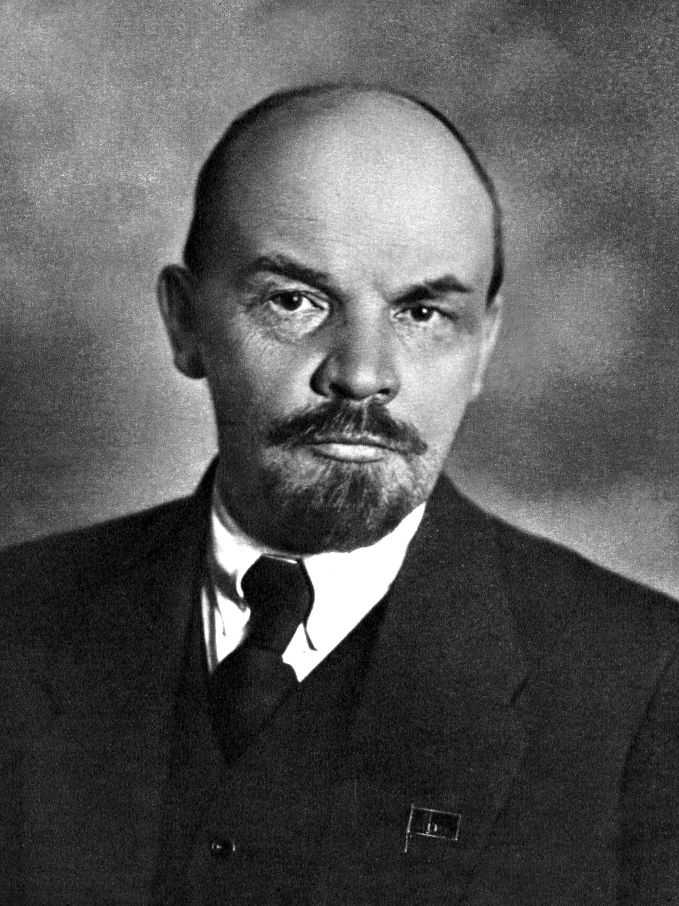

Appointment
 Osama Bin Laden
Osama Bin Laden

Dr. Vladimir Lenin
MBBS, MS Neurologist
Serves for: Insomnia, Multiple Sclerosis, Epilepsy, Neuropathic Pain, Dementia, Parkinson's Disease
About
Dr. Vladimir Lenin is a highly skilled neurologist with an extensive background in medical sciences and revolutionary healthcare reforms. He pursued his medical degree with a focus on neurology and public health, blending his passion for medicine with a commitment to providing healthcare for the masses. He has been recognized for his research on neurological disorders and his contributions to medical education.
Specializations
- Neurology
- Insomnia Treatment
- Multiple Sclerosis Management
- Epilepsy Treatment
- Neuropathic Pain Management
- Dementia and Alzheimer's Care
- Parkinson’s Disease Treatment
Work Experience
- Neurologist at Dhaka Medical College
- Chief Neurologist at Moscow Central Hospital
- Consultant at Beijing Medical Research Institute
- Senior Lecturer at Havana University of Medical Sciences
- Medical Advisor at Cuban Institute of Neurology and Neuroscience
Education
- Doctor of Medicine (MD), Neurology – Moscow State University
- Master of Surgery (MS), Neurological Sciences – Saint Petersburg Medical Academy
- Bachelor of Medicine, Bachelor of Surgery (MBBS) – Dhaka Medical College
- Fellowship in Neurological Research – Havana University